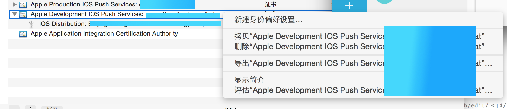

准备条件
JPush推送本质上还是使用的apple的apn服务。 所以apn所需要的所有东西，他都需要。比如证书之类的。 而且这一部分在网上已经有很完毕的描述了。我简单的列举一下我读过的一些东西。
通过阅读以上的文章确认我们需要的内容如下：
- 在苹果开发者账户中生成 appid。
- 在苹果开发者中心生成对应环境的推送证书。
- 下载证书，导出成p12文件。
- 上传证书到jpush平台。
- 把jpush的 phone-gap。 https://github.com/jpush/jpush-phonegap-plugin 插件加入到项目中
开始干活
生成证书的之类的具体操作就不多说了。只是把我遇到的坑说出来。这样大家就可以不用重复我踩过的坑了。
安装证书 -- 第一个坑
下载完在苹果开发者中心的证书，大家都说通过 双击 来安装到 Mac 上的钥匙串程序中。这里我没有能够安装成功。 我的解决办法是在钥匙串中选中 登陆 , 从Finder中将证书拖拽到钥匙串中。
上传证书到JPush平台
这个问题折腾了很久。在上传证书的时候有两点需要注意：
- 如果导出的时候设定密码了。密码一定要填写。
- 注意测试环境和生产环境证书不一样
- 导出证书的时候选中证书就是下面图中方块选中的部分，而不是下面的秘钥。如下图所示：

修改ionic项目
这个地方我不得不吐槽一下，理论上只需要使用 ionic add plugin jpush 这样就可以完成安装动作。 但是jpush现在不行。那就先手动改吧！
需要修改的文章有两个，一个是 PushConfig.plist. 写入两个值：
- APP_KEY
- 在JPush中的appKey。
- CHANNEL
- 这个值只是用来统计的。可以根据公司的规则设定。不影响发送功能。
修改AppDelegate.m 这个文件
在文件开始加入导入：
import "APService.h"
import "JPushPlugin.h"
其他地方按照 https://github.com/jpush/jpush-phonegap-plugin IOS手工安装 这个地方就可以了。千万不要按照 IOS使用PhoneGap/Cordova CLI自动安装 中的修改文件的方法修改。他的那个
- (void)application:(UIApplication *)application didReceiveRemoteNotification:(NSDictionary *)userInfo {
// Required
[APService handleRemoteNotification:userInfo];
[[NSNotificationCenter defaultCenter] postNotificationName: kJPushPluginReceiveNotification
//这个 kJPushPluginReceiveNotification 是错误的，没有定义。 要将这一句去掉。
object:userInfo];
}